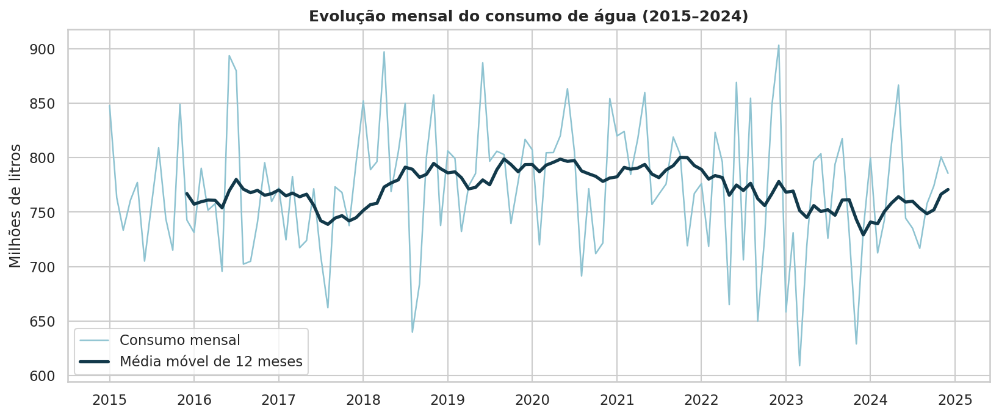
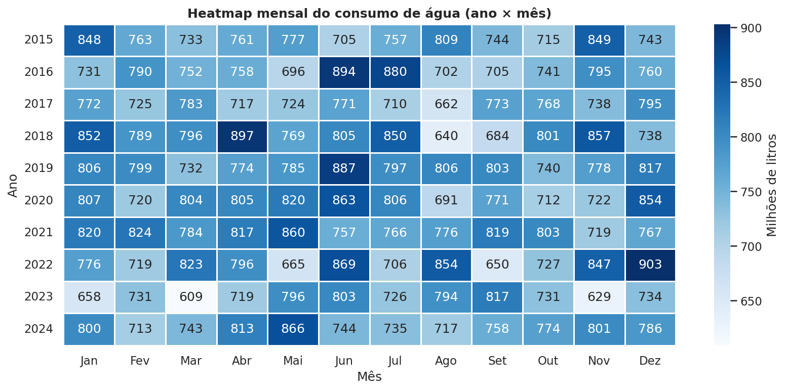
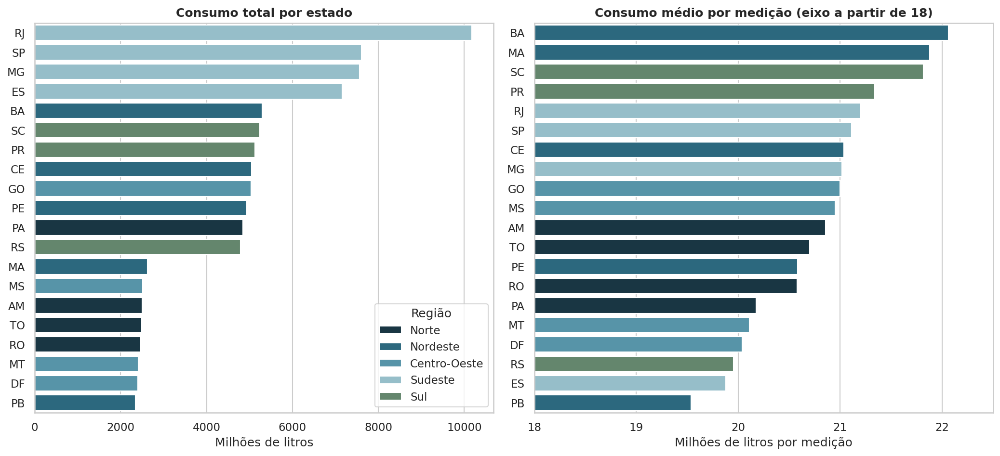
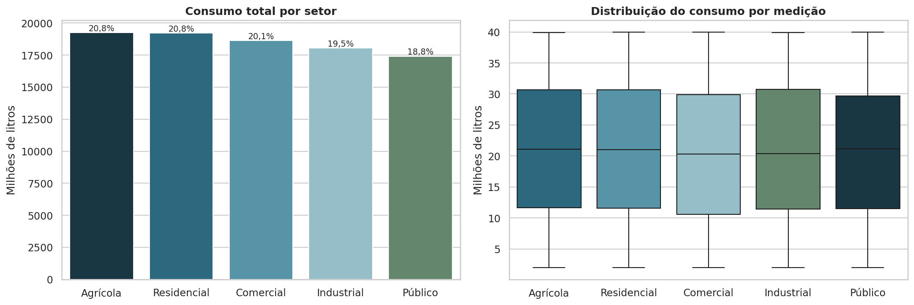
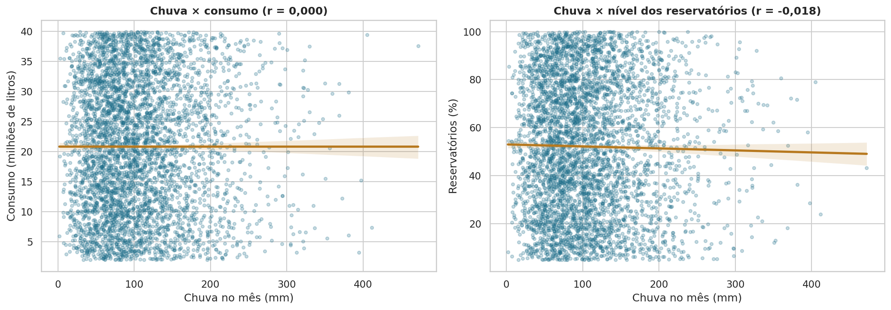
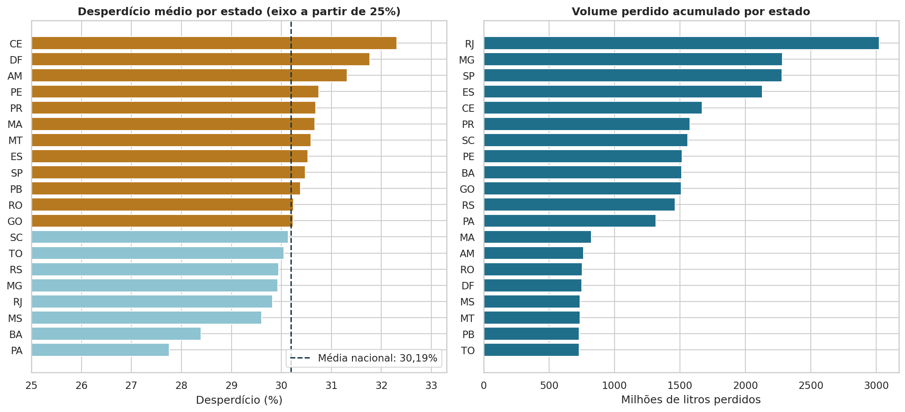
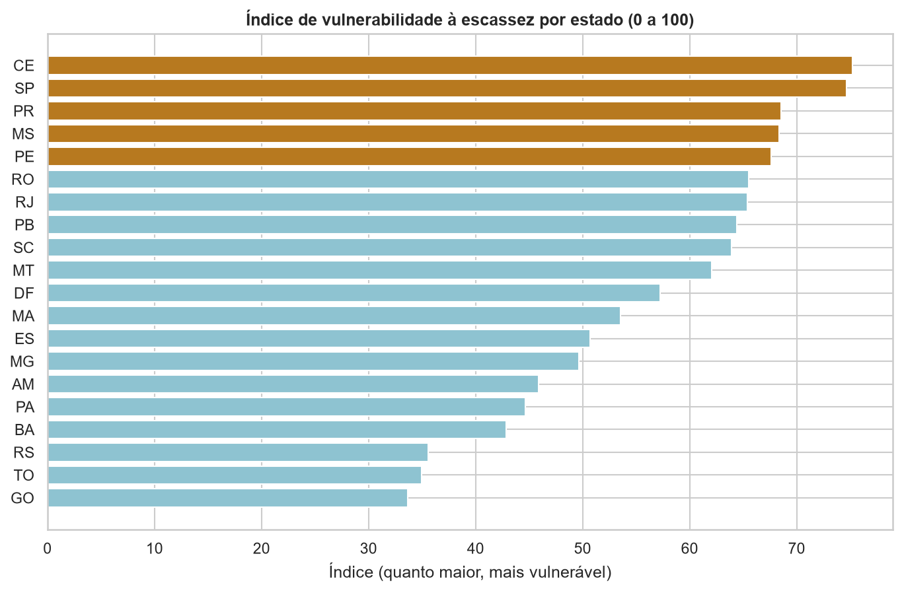
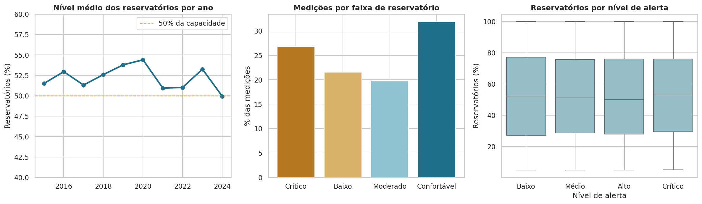
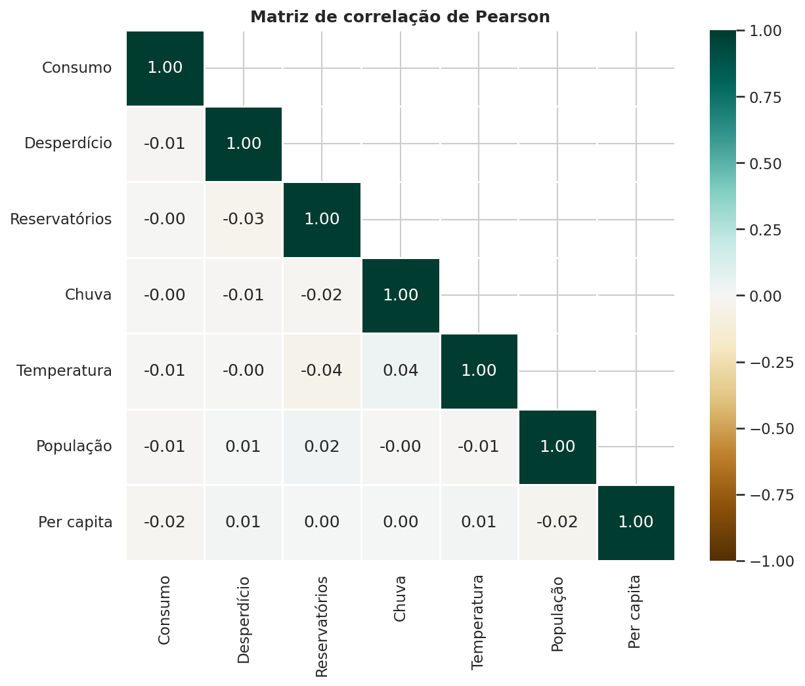

Consumo de Água no Brasil, 2015 a 2024
Uma análise de dez anos de medições mensais por estado e setor: onde a água é consumida, se a demanda mudou com o tempo e com a chuva, e quanto se perde antes de chegar ao uso.
Nome: Marcus Vinicius Rodrigues da Silva
Professor: Alexandre Louzada
Disciplina: Linguagens de Programação
Nível médio dos reservatóriosMédia de todas as medições. Abaixo de 30% a situação é crítica, e 27% das medições ficaram nessa faixa.
O projeto
A água sustenta o abastecimento urbano, a agricultura, a indústria e a geração de energia. Crescimento populacional, mudanças climáticas e desperdício tornam o monitoramento do consumo cada vez mais necessário, principalmente em períodos de estiagem.
O projeto parte de uma base simulada com 4.440 medições mensais de 20 estados e 5 setores de consumo, com dados de consumo, desperdício, nível dos reservatórios, chuva, temperatura, população e nível de alerta. A análise foi feita em um notebook Python, os dados tratados foram gravados em um banco SQLite e os resultados estão em um dashboard interativo no Streamlit.
Um cuidado guiou toda a análise: os estados têm quantidades diferentes de medições por mês. O Rio de Janeiro tem quatro, oito estados têm uma. Por isso, sempre que a comparação é entre estados ou regiões, o consumo total aparece ao lado do consumo médio por medição.
O que os dados respondem
Quais estados consomem mais água?
RJ, SP e MG lideram o total, mas porque têm mais medições. No consumo médio por medição, BA, MA e SC ficam à frente, com diferenças pequenas entre todos.
Existe sazonalidade no consumo?
Não de forma relevante. O padrão mensal muda de um ano para outro, e o mês de maior consumo médio (junho) supera o de menor (agosto) em menos de 9%.
Quais setores consomem mais?
Agrícola e Residencial, praticamente empatados com 20,8% do total cada. O setor Público é o que menos consome.
Há regiões mais vulneráveis à escassez?
Pelo índice que combina reservatórios, chuva, desperdício e alertas, Nordeste e Sudeste ficam no topo, puxados por CE e SP. O Norte, com mais chuva, é o menos vulnerável.
Existe relação entre estiagem e consumo?
Não. A correlação entre chuva e consumo é praticamente zero, e o consumo nos meses de estiagem é igual ao dos meses de chuva normal.
O consumo aumentou ao longo do tempo?
Não. O consumo de 2024 ficou apenas 0,5% acima do de 2015, e a média móvel de 12 meses é praticamente estável.
Quais estados desperdiçam mais?
CE (32,3%), DF (31,8%) e AM (31,3%). Mas o desperdício fica perto de 30% em todos os estados, o que indica um problema estrutural.
Indicadores da base completa
| Consumo total de água | 92,6 bilhões de litrossoma de 2015 a 2024 |
|---|---|
| Estado com maior consumo | RJpelo total; BA pela média por medição |
| Setor que mais consome | Agrícola20,8% do total |
| Consumo per capita médio | 266,5 L/dia |
| Média de desperdício | 30,2% |
| Nível médio dos reservatórios | 52,2% |
27,9 bilhões de litros perdidos
De cada 10 litros registrados, 3 se perderam. Esse é o achado mais importante do projeto: o desperdício aparece no mesmo patamar em todos os estados e setores, e subiu 1,3 ponto percentual entre 2015 e 2024.
Cada ponto percentual a menos de desperdício equivale a cerca de 926 milhões de litros.
Gráficos da análise
Os gráficos abaixo foram gerados no notebook com Matplotlib e Seaborn. No dashboard, as mesmas análises são interativas e respondem aos filtros de ano, mês, região, estado, setor e nível de alerta.









Conclusão
Nesta base, o consumo de água é estável e homogêneo. Ele não cresce ao longo dos dez anos, não tem sazonalidade forte e não responde a chuva, temperatura ou estiagem. As diferenças de volume total entre estados e regiões vêm sobretudo da quantidade de medições, não de um consumo mais intenso.
O que se destaca é a perda. Quase um terço da água registrada não chega ao uso, em todos os estados e setores, enquanto os reservatórios operam em média pouco acima da metade da capacidade. A principal alavanca de gestão é reduzir perdas, e não restringir um setor específico.
- Priorizar programas de redução de perdas, começando pelos estados com maior desperdício percentual: CE, DF e AM.
- Monitorar os estados que lideram o índice de vulnerabilidade (CE, SP, PR, MS e PE) e os de reservatório médio mais baixo (SC e SP).
- Revisar o critério de nível de alerta, que hoje não acompanha o nível dos reservatórios.
- Equilibrar a coleta de dados entre estados, porque a diferença no número de medições distorce as comparações por soma.
A base é simulada e suas variáveis foram geradas de forma independente. As conclusões descrevem os dados fornecidos e não a realidade hídrica do Brasil.
Como foi feito
Análise
- Validação de tipos, ausentes, duplicatas, faixas e outliers
- Engenharia de atributos: estação, volume perdido, estiagem, faixas de reservatório
- Séries temporais com média móvel de 12 meses
- Correlação de Pearson e índice de vulnerabilidade
Dashboard
- Filtros por ano, mês, região, estado, setor e nível de alerta
- KPIs dinâmicos e interpretações que se ajustam ao recorte
- Mapa interativo e gráficos Plotly
- Tabela dinâmica, upload de CSV e consultas SQL
Tecnologias
- Python, Pandas e NumPy
- Matplotlib, Seaborn e Plotly
- SQLAlchemy e SQLite (modelo relacional)
- Streamlit, GitHub e GitHub Pages
projeto-consumo-agua/ ├── app.py dashboard Streamlit ├── requirements.txt ├── README.md ├── index.html esta página ├── dados/ │ ├── simulacao_consumo_agua_brasil.csv │ └── brasil_estados.geojson contornos dos estados para o mapa ├── notebooks/ │ └── analise_consumo_agua.ipynb ├── database/ │ └── consumo_agua.sqlite tabelas estados e medicoes └── imagens/ gráficos gerados pelo notebook
Arquivos do projeto
Dashboard no Streamlit
Explore os dados com filtros, mapa e tabela dinâmica.
Notebook de análise
Limpeza, KPIs, gráficos, banco de dados e interpretação.
Código do dashboard
O arquivo app.py com toda a aplicação Streamlit.
Base de dados
CSV com as 4.440 medições usadas no projeto.
README
Descrição do projeto e instruções para rodar localmente.
Repositório no GitHub
Código-fonte completo do projeto.